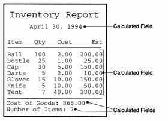

Inserting Calculations in Reports
You can create calculated fields for individual report layouts to display calculations. Unlike calculated fields created for a table or set, a report's calculated fields are only available to that report, and not to other layouts. Calculated fields can perform calculation using data from a single record. You can also perform summary calculations, such as totals and averages, using data from multiple records. Calculated fields can also display simple calculations, such calculating today's date or the current page number. The diagram below shows examples of each of these uses.

Additional information about creating calculated fields can be found in Calculated Fields, Inserting Calculations and in Functions and Expressions.
 Note : The Define Calculated Fields dialog will show global calculated fields defined at the table level. If you open this dialog
from a layout, you will be to see these calculated fields, but will not be able to modify them.
Note : The Define Calculated Fields dialog will show global calculated fields defined at the table level. If you open this dialog
from a layout, you will be to see these calculated fields, but will not be able to modify them.
Creating a Calculated Field
Calculated fields can be created in a few ways, the easiest of which is by using the Drag-and-Drop List. To create a calculated field using the Drag-and-Drop List :
Set the Drag-and-Drop List Object drop-down box to either "Fields" or "Fields with Titles".
Ensure that the Summary Field Genie is turned on. The
 icon at the top of the dialog box should be depressed.
icon at the top of the dialog box should be depressed.Drag the field or the "
" entry onto the report. The Summary Field Genie appears. Specify whether you want to print the value of the field itself, or some calculated value, such as the total, or count of that field.
 Note : The Summary
Field Genie only appears if you drag a single field from the Drag-and-Drop List.
Note : The Summary
Field Genie only appears if you drag a single field from the Drag-and-Drop List.
Optionally, click Advanced to display the Summarization Advanced Settings dialog box.
Optionally, make a selection from the Group list. This specifies when to reset the summary. The summary will reset to zero when a new group appears.
Optionally, make a selection from the Subgroup list. This specifies the records that you are summarizing.
Optionally, change the Calculated field name.
Optionally, change the Display Length and Decimal Places used for the summary value.
In addition, Alpha Anywhere lets you define summary calculations at the page level. You can calculate total, count, average, minimum and maximum for all of the records on each page of a Report.
You can also create calculated field expressions yourself. Near the
top of the Drag-and-Drop List is the entry "
See Also
Report Topics, Proper Use of the GRP ->Sub_Group Expression